01確認の集中
これまで
毎回、社長やベテランに確認しないと進めない。
振れる形
確認項目と相談先を、AIチャットで引ける。
長野の中小製造業のためのAI業務引き継ぎ支援
長野のFDE（Forward Deployed Engineer）が、AIで成果が出るまで伴走します。
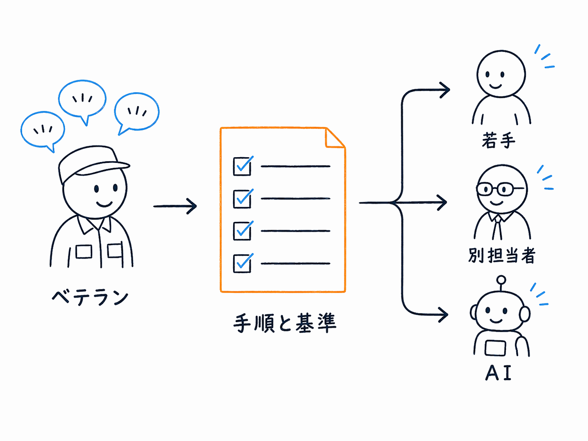
対象：長野の中小製造業 支援：AI業務引き継ぎ 型：長野のFDE（Forward Deployed Engineer）
現場チェック
よくある詰まり
若手もベテランも、同じ一人の返事を待っています。
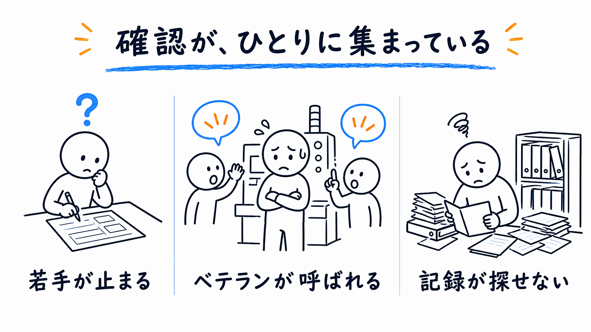
たとえば
これまで
毎回、社長やベテランに確認しないと進めない。
振れる形
確認項目と相談先を、AIチャットで引ける。
これまで
ベテランが毎回説明し、新人は聞きづらい。
振れる形
作業の流れと注意点を、新人向けメモにする。
これまで
過去の記録を探せず、結局いつもの人に聞く。
振れる形
発生状況と確認先を、チェックリストにする。
判断の置き場所
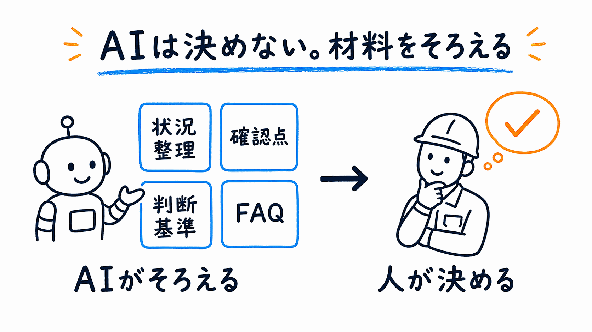
私たちの立ち位置
AIは「使える」と「成果が出る」の間に距離があります。その橋渡し役がFDE（Forward Deployed Engineer）です。パランティアという、ピーター・ティール氏が共同創業したアメリカのビッグデータ分析企業が確立した職種です。
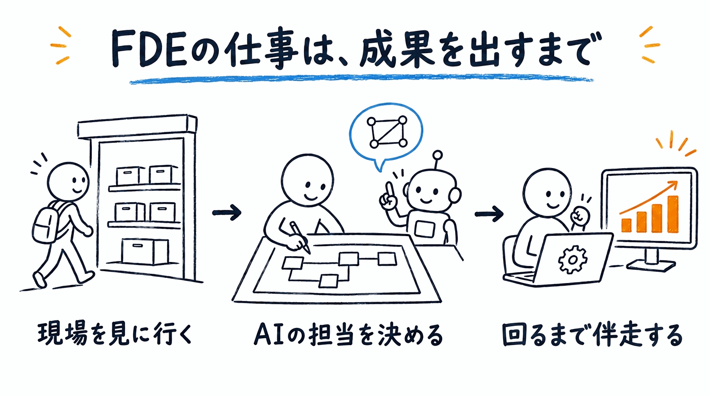
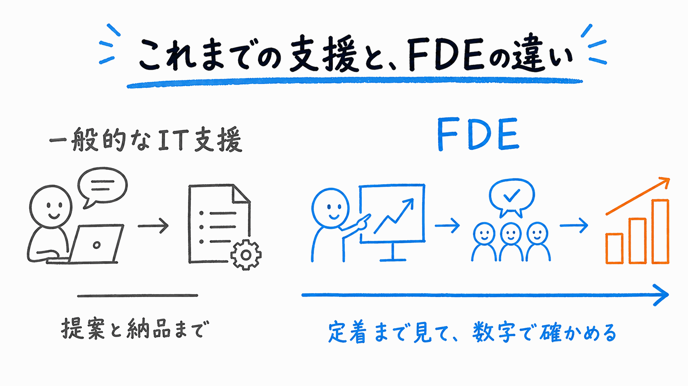
実例
松本市の食品製造業で、在庫と生産量を最適化するシステムに取り組んでいます。
地元のシステム会社が作るもの
こちらが受け持つもの
FDE（Forward Deployed Engineer）は技術者を現場に置く分、費用がかかり、大企業向けが中心になりがちです。その役割を、長野の中小企業の中で私たちが引き受けます。
図：FDE（Forward Deployed Engineer）の行き先 ChihoAIは長野の現場側に立つ
進め方
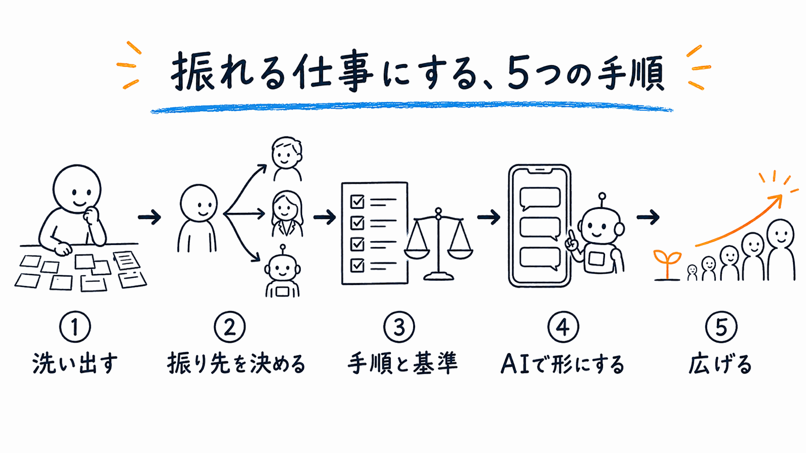
料金目安
最初に、「何が、どこまで変われば完了か」を一緒に決めます。
条件が合えば、人材開発支援助成金などの活用も相談できます。 人材開発支援助成金の詳細を見る

石澤の実績
石澤 亮輔（ペスハム） / 株式会社メタマケ 代表
東京ガスで約11年、現場とエンジニアをつなぐ役割を担い、今は長野のFDE（Forward Deployed Engineer）をしています。
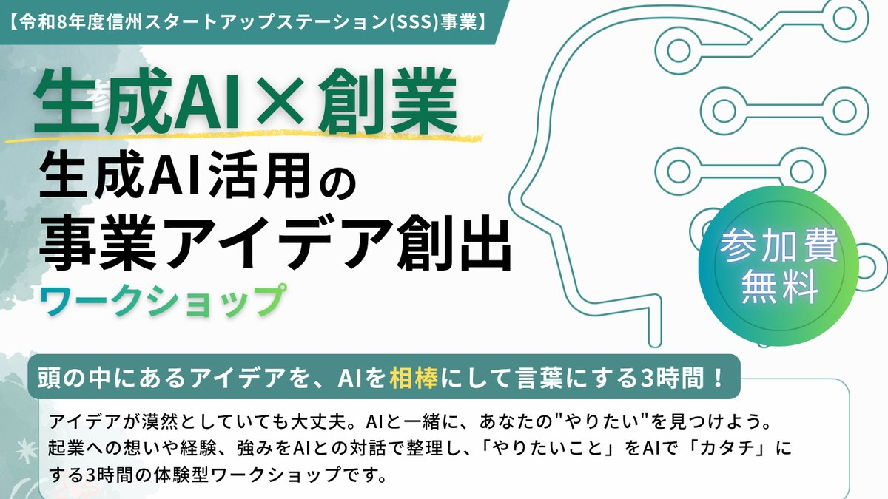
Seminar
長野県委託事業のSSS（長野市）で、生成AIを相棒にして事業アイデアを言葉にする3時間のワークショップを担当しました。
開催案内を見る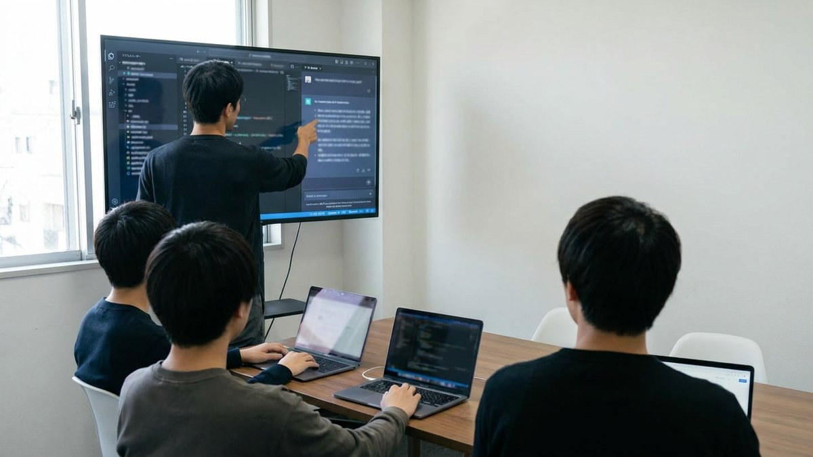
Training
若手エンジニア3名に、GitHub CopilotやCodexを使ったこれからのエンジニアリングを、全5回の研修で実務に落とし込みました。
写真はイメージです。
Machine Learning PM
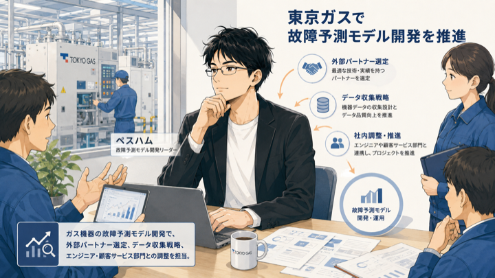
AIがまだ一般的でなかった2019年ごろ、過去の膨大なガス機器の故障状況と故障箇所のパターンを機械学習させ、予測モデルを開発しました。故障が起きた際に過去データと突き合わせ、故障箇所を予測するシステムです。
Public Writing
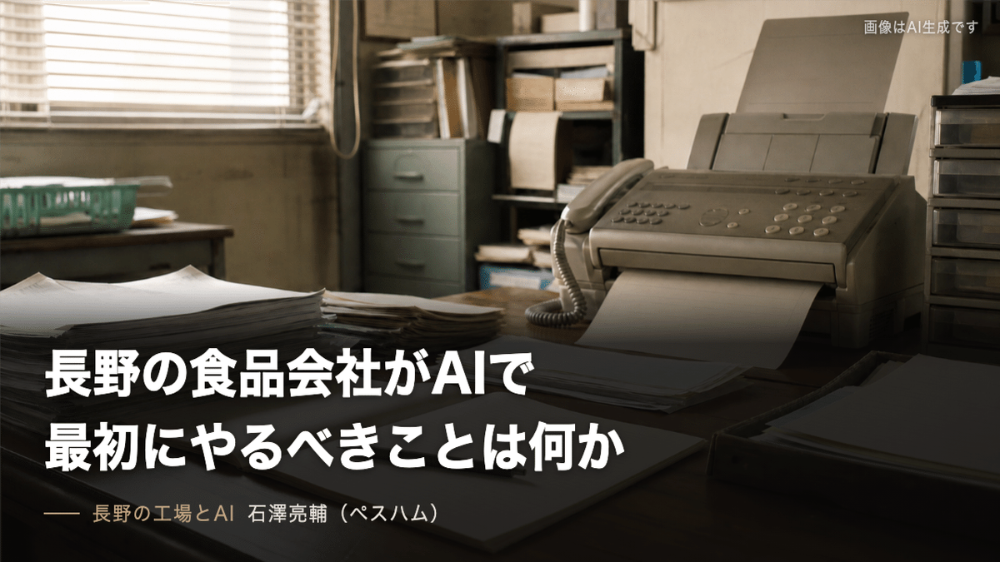
ChatGPTやClaudeの使い方を、現場の言葉で書いています。
Local AI Practice
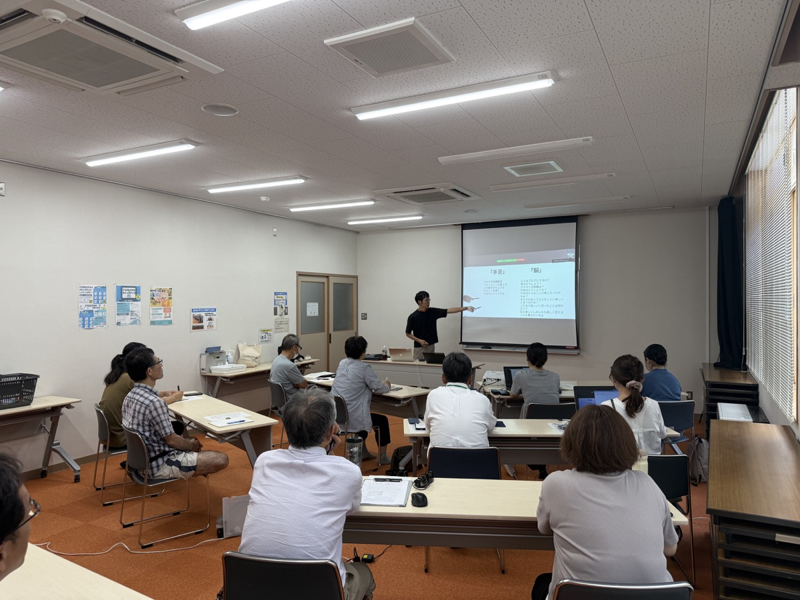
松本市の笹賀公民館で、AIを初めて触る市民向けの講座を開きました。
Learning Contents
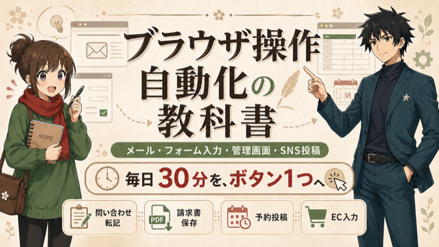
非エンジニア向けに、手順どおりで進む構成にしました。
AI講座の感想
主催者 Eさん
「怖がらずにまず触ってみよう」という優しい導入から始まりました。
デジステ笹賀（松本市）生成AI講座の感想から抜粋
参加者 Tさん
いろいろな場面で活用できる反面、注意しないとならないことなども説明頂きました。
同講座の感想から抜粋
相談方法